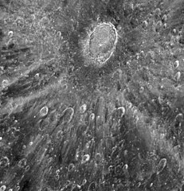
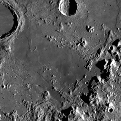
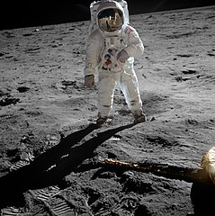
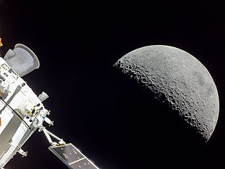

Full Moon, seen from Earth. Source
The Moon is the only natural satellite orbiting Earth.
It is also the only natural astronomic body other than Earth that has been visited by people.
It is the fifth largest satellite in the Solar System and is the largest relative to it's parent planet.
The Moon was likely formed when a protoplanet (called Theia) collided with Earth 4.5 billion years ago.
Its composition is thus similar to that on Earth.
The Moon is heavily cratered and contains multiple valleys known as "maria" formed by cooling of the Moon during formation.
Since their formation, it is no longer geologically active.
The Moon has no magnetic field, liquid water, or a significant athmosphere, but it has ice present on the poles.
The Moon has been visited by multiple spacecraft.
The first object to do so was Luna 2.
During the Apollo program, 12 men landed on the moon.
Currently the Artemis program is going to land people almost fifty years after the last Apollo mission, with the intention to eventually make an American base on the Moon.
China's CNSA also has a program with a long-term goal of sending people to the Moon and creating their own base.
The leading theory of the formation of the Moon is that a protoplanet around the size of Mars, called Theia, collided with Earth.
The debris were ejected outside Earth's Roche limit and compressed into a molten magma-covered Moon.
Isotope dating of Moon samples suggests that these events have occured 50 million years after the origin of the Solar System.
Originally, the Moon orbited the Earth much closer than today.
Due to tidal acceleration, the Moon's orbit grew to what it is today.
The Moon's history can be divided into several periods.
The oldest period is the pre-Nectarian, between 4.5 and 3.9 billion years ago.
It is characterized with the the cooling of the magma ocean, which formed the crust, and the dissipation of the early atmosphere.
Since then, the surface has been impacted, forming numerous craters.
The South Pole-Aitken basin is one of the oldest, dating from the Pre-Nectaran period.
The Nectarian period, between 3.9 and 3.85 billion years ago, was the period between the Nectaris and the Imbrium imact events.
The Nectaris basin could be much older, forming 200,000 years earlier.
The Imbrian period is the period between 3.85 and 3.2 billion years ago.
During the Early Imbrian, the last basins of the Lunar maria have been formed, including Mare Imbrium.
At that time, the Late Heavy Bombardment ended.
In the Late Imbrian, volcanic processes filled up these basins with lava, eventually cooling down into basalt plains.
The Eratosthenian period, between 3.2 and 1.1 billion years ago, is loosely characterized.
It encompasses the formation of impact craters that are still not clearly weathered (like the South Pole-Aitken), but do not have bright ray ejecta, the material of which has darkened due to space weathering.
This is a somewhat misleading sign, as the composition of the ejecta is responsible for its potential discoloration.
Near the end of that period, the Moon seized to be volcanically active.
In the Copernican period, which is the current one, the youngest impact craters were formed.
They are mostly bright and have significant rays, but because of the aforementioned statement, these are not accurate for dating features from that period.
The Moon is 384,400 km away from Earth on average with a perigee of 362,600 km and an apogee of 405,400 km.
The eccentricity of the Moon's orbit is 0.05.
The Moon is tidally locked to the Earth and rotates around Earth and around its axis with the same rate.
This makes one side of the Moon visible - the near side, while the far side (also misleadingly called "dark side") is invisible from Earth.
A synodic orbital period of the moon is 29.53 Earth days.
This period is approximately 1/12 of a year on Earth and is used as a reference in Lunar calendars.
A sidereal orbital period is 27.32 days.
During the synodic orbital period, the moon completes a cycle of phases.
Those phases are determined by the position of the Moon relative to the Sun and Earth.
When the moon is between the Sun and Earth, a new moon appears.
It is invisible to the naked eye, except during solar eclipses.
New moon is followed by a waxing crescent, growing up to a half illuminated near side - first quarter.
First quarter is then followed by a waxing gibbous (between half and fully illuminated near side) and a full moon, which is seen as fully illuminated.
A full moon is followed by a waning gibbous, a third quarter and a waning crescent before it completes the cycle with a new moon.

Total Lunar Eclipse, November 8 2022. Source
There are two types of eclipses seen from Earth - a solar and a lunar.
During a solar eclipse, the moon is in its new moon phase and is covering the Sun.
When the moon is completely covering the Sun, it is called a total solar eclipse.
From Earth the Moon appears as big as the Sun, so it can almost perfectly hide it in a total solar eclipse.
A lunar eclipse occurs when a full moon is in the shadow of Earth and gets little to no sunlight.
There are three types of lunar eclipses.
A penumbral eclipse occurs when the Moon is in Earth's penumbra (the shadow partially obstructed from sunlight).
A partial lunar eclipse is seen when a part of the Moon is in Earth's umbra (shadow fully obstructing the sunlight)
A total lunar eclipse has the Moon within Earth's umbra in it's entirety.
The Moon appears red during the total eclipse similarly to a rising and setting sun.
The Moon is 3.7 times smaller than Earth, with a mean diameter of 3,474.8 km.
It is the fifth largest satellite, smaller than the planet Mercury and Io, and larger than Europa and the largest dwarf planet Pluto.
The Moon is the largest natural satellite relative to its parent planet.
If confirmed dwarf planets are considered, then the Moon would be second behind Pluto's moon Charon.
The Moon has a similar structure and composition to that of Earth, suggesting that the material on the Moon originated mostly from Earth.
It is differentiated into a core, a mantle, and a crust.
The core is divided into a solid inner and a liquid outer core, composed of iron and some nickel.
The mantle is divided into a lower and partially molten, middle, and upper layers.
It consists of predominantly iron-rich (mafic) silicates like olivine and pyroxene, though some basalts from the Lunar maria are high in titanium-rich minerals.
The crust has lighter silicate minerals like plagioclase, mostly in the form of the rock anothosite.
Predominant elements thus include oxygen, silicon, aluminum, calcium, iron, and magnesium as well as significant trace amounts of titanium, manganese, sodium, potassium, rare-earth elements, and other.

Tycho crater, NASA Hubble Telescope
The Moon has a relatively diverse surface thanks to a period of geologic activity.
Two major terrains can be defined - old, cratered plagioclase crust, and more recent basaltic plains.
The old surface is lighter and covered with craters.
It consists mostly of the rock anorthosite.
Two extremes can be found on this type of terrain, both on the far side.
One of them is the largest impact basin - the South Pole-Aitken basin.
It is also one of the biggest known impact craters in the Solar System, with a diameter of 2,240 km.
The crater is 13 km deep and the lowest point is within the smaller Antoniadi crater (-9,178 m).
The other extreme is the Highlands. where the highest point of the Moon is - the Selenean summit (10,629 m)
Apart from the South Pole-Aitken and the maria basins, there are numerous impact craters on the Moon, some of which still have bright rays of ejecta.
Some craters include Copernicus and Tycho, which have bright rays, Schrödinger, Van De Graaff, which is 8-shaped, etc.

Palus Putredinis, located in Mare Imbrium. To the right are the Montes Appeninus, where the Apollo 15 landing site was located.
The most defining feature on the Moon are the maria - dark valleys of Lunar basalt, formed by lava cooling.
Before the Space race, they were believed to be sea basins, hence the latin name for 'sea'.
The near side of the Moon features most of the Lunar maria.
The largest plain is Oceanus Procellarum, which has not formed inside an impact basin.
Many of the Lunar maria are located in a impact basin, the biggest of which is Imbrium.
Other basins include Serenitatis, Crisium, Smythii, and Nectaris.
Oceanus Procellarum, Mare Imbrium, Mare Frigoris, Mare Cognitum, Mare Vaporum, Mare Insularum, and Mare Nubium form the so-called Procellarum KREEP terrane (geologic province).
The acronym comes from potassium (K), rare-earth elements (REE) and phosphorus (P), which are in higher concentrations.
The terrane is also rich in radioactive elements like thorium and uranium.
Several small maria are present on the far side.
Mare Orientale is the biggst of them, and is a unique multi-ring impact basin.
The other far-side basins are Mare Moscoviense and Mare Ingenii.
Some like Mare Australe and Mare Marginis are located on the edge of the near and far sides.
Atmosphere and hydrosphere
The moon has a very thin exosphere and contains ice water.
During the Chandrayaan-1 mission the first evidences of water on the Moon were found.
Subsequent missions further proved those discoveries.
Water ice on the Moon is concentrated around the poles within deep shadowy impact craters.
The Moon is known since ancient times.
It's regular phases were used for the making of many calendars.
The Moon was categorised as a planet until Galileo Galilei's discovery of the four natural satellites of Jupiter.
He still was unsure what to call them, as they were the first object other than the Moon to orbit planets instead of the Sun.
It took several years for the word satellite to be used.
Natural satellites are also called moons after the Moon.
Galileo made observations of the Moon with his telescope and discovered landforms on its surface.
Multiple people produced maps of the Moon, displaying its "maria" and craters.
After the beginning of the Cold War, the Soviet Union began the development of rockets to launch objects outside the Earth.
The launch of Sputnik 1, the first artificial satellite, marked the beginning of the Space Race between the USA and the USSR.
One of the objectives of the race was to send people to the Moon, as it is the closest celestial object to the Earth.
The Soviet Union began it's Luna program.
Luna 1 was the first spacecraft to reach the Moon and Luna 2 was the fist to impact the surface.
Luna 3 was the first to fly by the far side, making the first photographs of it.
Luna 9 made the first soft landing and Luna 10 followed with the first orbit around the Moon.
After the USA's successful Apollo 11 crewed mission to the Moon, the Luna program continued - Luna 16 made a sample return and Luna 17 brought the first rover - Lunokhod 1.
The Soviet Union also had other Lunar programs apart from Luna.
The Zond program was an attempt at conducting crewed flights to the moon.
Zond 5 sent the first lifeforms to the Moon (without landing) and returned safely to the Earth - two tortoises and other animals and plants intended for feeding the tortoises.
The Soviet Union also had plans for sending people, but never did.

Edwin "Buzz" Aldrin on the Moon during the Apollo 11 mission. Neil Armstrong is seen in the reclection of the visor.
The USA joined the race, but was behind the USSR, which already accomplished many milestones, including first man in space.
Many uncrewed missions were conducted under the Pioneer program, but none successful with the exception of a partial success of Pioneer 4.
Following the Pioneer program was the Ranger program, with Ranger 4 being the first American mission to impact the Moon.
During the development of the uncrewed missions, a program aimed at sending the first people to the Moon started.
The Apollo Mission was president John Kennedy's suggestion for a crewed mission to the surface of the Moon by the end of the 60s.
In 1967, Apollo 1 caught fire before launching, resulting in the death of all three crew members.
After the tragedy, several uncrewed tests were conducted before returning to crewed flights.
Apollo 7 was a successful validation of the rocket systems.
Apollo 8 was the first to send people to the Moon, orbiting around the Moon ten times.
Apollo 9 tested rendezvous and docking in Earth orbit, while Apollo 10 made an uncrewed landing of the Lunar module on the Moon.
In 1969, Neil Armstrong, Edwin "Buzz" Aldrin and Michael Collins were travelling to the Moon on the Apollo 11 mission.
While in Lunar orbit, Armstrong and Aldrin moved into the Lunar lander "Eagle", while Collins stayed in the command module "Columbia".
Finally, on 20 July 1969 Eagle landed on the surface on the Moon in Mare Tranquillitatis.
Six and a half hours later Neil Armstrong and Buzz Aldrin set foot on the Moon and were the first to do so.
While doing so Armstrong said the famous words: "That's one small step for a man, one giant leap for mankind."
The tasks they were doing were walking on the surface, taking photographs, collecting samples, deploying scientific instruments and continuously broadcasting back to Earth.
The three astronauts returned safely on July 24.
Apollo 12 was the second crewed landing mission, landing near the Surveyor 3 lander.
Apollo 13 was meant to be the third landing mission, but due to a failure in an oxygen tank, the crew members returned without landing.
The Apollo 13 mission was reassigned to Apollo 14, which succeeded.
Three more Apollo missions sent people on the surface.
These missions were extended and the first time a crewed rover was used.
No people have been to the Moon since then.

Artemis I mission. The far side of the Moon seen from Orion.
There were no dedicated missions to the Moon between 1976 and 1990, the only probe to visit it was the International Cometary Explorer.
The first mission after that period was the Japanese Hiten mission.
NASA sent multiple spacecraft, including Artemis I, part of the Artemis program and follow-up to the Apollo Mission.
Artemis I was an uncrewed mission to the Moon and is going to be followed by Artemis II, a crewed Moon-orbiting mission and Artemis III and IV, crewed Moon-landing missions.
Later Artemis missions are planned to send payload and astronauts for a longer stay on the Moon.
Multiple CubeSats were deployed during Artemis I, some of which still in operations.
China began it's Moon program "CLEP" with the orbiter Chang'e 1, followed by Chang'e 2.
CNSA's first lander Chang'e 3 also included the Yutu rover.
Three more orbiter mission were launched before the Chang'e 4 mission.
It was the first to land on the far side of the Moon and included the Yutu-2 rover.
Chang'e 5 was China's first sample return from the Moon.
Chang'e 6 completed another sample collection, this time from the far side.
Upcoming Chinese missions to the Moon are Change 7 and 8, the latter of which will 3D print with Lunar resources, and a Crewed Lunar Mission by 2030.
India has sent three missions to the Moon.
The first was the orbiter Chandrayaan-1, which included an impactor and was the first to discover water on the Moon.
Chandrayaan-2 is a mission that is still in operation.
It included a lander and a rover, but due to a software glitch they crashed into the Moon.
The following Chandrayaan-3 successfully made a soft landing with the Vikram lander and the Pragyan rover.
The lander and the rover operated only for a lunar day, since they were not built to survive the night temperatures.
Other countries and agencies that have sent, or are in the process of sending a spacecraft are Israel, ESA, South Korea and the UAE.
The first mission made by a private company was Manfred Memorial Moon Mission by the Luxembourg-based LuxSpace.
IM-1 was a lunar lander by Intuitive Machines and the first private mission to land on the moon.
Future missions to the Moon include Artemis II - X, Chang'e 7 - 8, Chandrayaan-4, Luna 26 - 27 (Roscosmos) and many more.
Many private companies are planning missions to the Moon.
SpaceX was expected to send nine people around the Moon with dearMoon in 2023, but the project got delayed and subsequently canceled.
Blue Origins has plans for a Moon cargo lander, called Blue Moon.
The Moon is the brightest object in the night sky and played a crucial role in the culture of ancient civilisations.
Calendars were based on the monthly cycle of the Moon.
Each month begins and ends with a new moon.
In many languages, the word for month comes from the name of the Moon.
The symbol most associated with the Moon is a crescent.
In many logographic writing systems a crescent, or a derivative of a crescent is used.
For example, the Egyptian hieroglyph 𓇹 is a crescent, while the Chinese symbol 月 developed from one.
A star and crescent is an old symbol, depicting the Moon and Venus.
It was used in the Byzantine Empire, the Ottoman Empire and is also a symbol of Islam.
The Lunar maria also appeared as different images.
In Western cultures, it has been interpreted as a man, while in Chinese and Mesoamerican cultures, it is interpreted as a rabbit.
Since the Scientific Revolution, the modern perception of the Moon changed.
The idea of spacefligh and people on the Moon became more popular.
Examples of media imagining travelling to the Moon include Jules Verne's novel "From the Earth to the Moon" and the 1902 movie "A Trip to the Moon".
External links
{% include catnatural-satellites.html %}
{kind=link}
{kind=link}
{kind=link}